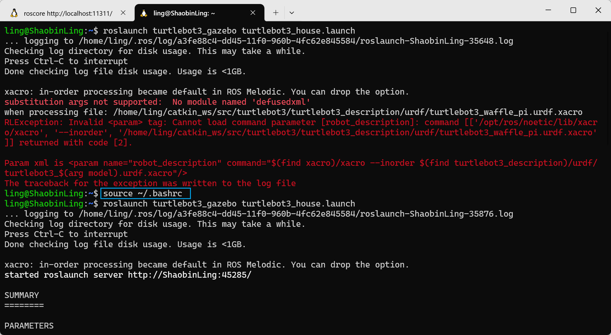

安装并准备 ROS Noetic + Gazebo / 创建 ROS 工作空间¶
🧱 1. 安装并准备 ROS Noetic + Gazebo / 创建 ROS 工作空间¶
- 安装 ROS Noetic 如果还没装，请使用鱼香ROS的一键安装脚本安装 ROS Noetic。
按照推荐选择即可，可以参考如下选择：
安装 Gazebo（Noetic 默认 Gazebo 11）：
sudo apt install ros-noetic-gazebo-*
sudo apt install ros-noetic-gazebo-ros-pkgs ros-noetic-gazebo-ros-control
- 建立工作空间
- clone 仓库
git clone -b noetic https://github.com/ROBOTIS-GIT/turtlebot3.git
git clone -b noetic https://github.com/ROBOTIS-GIT/turtlebot3_msgs.git
git clone -b noetic https://github.com/ROBOTIS-GIT/turtlebot3_simulations.git
-
编译 启动一个新的终端。
-
环境变量
把工作空间的环境自动加载（加入 .bashrc）：
指定 TurtleBot3 机器人模型（可以是 burger / waffle / waffle_pi）：
🚀 2. 启动 Gazebo 仿真¶
✅ 启动空环境¶
打开一个终端：
这会启动 Gazebo 并载入一个空世界和 TurtleBot3 机器人模型。
🌍 启动带障碍物 / 环境的世界¶
比如你想在默认世界里：
或者一个房子环境：
注意，首次载入 house 世界可能需要稍长时间下载模型
🎮 3. 控制机器人移动¶
要在 Gazebo 里控制机器人：
🕹️ 键盘控制¶
打开新终端（保持 Gazebo 正在运行），然后：
这会启用键盘控制（W/A/S/D 前进 / 后退 / 旋转），空格键停止等。
🧠 4. 使用 ROS 节点控制机器人¶
如果你想自己写 ROS 节点发布速度指令：
📡 ROS 话题控制例子¶
在另一个终端：
rostopic pub /cmd_vel geometry_msgs/Twist '{linear: {x: 0.2, y: 0.0, z: 0.0}, angular: {x: 0.0, y: 0.0, z: 0.5}}'
这会让机器人向前移动并缓慢旋转（只是例子，可以根据自己的代码改写）。
你也可以写一个节点发布 geometry_msgs/Twist 到 /cmd_vel。
🧩 5. 可选：启动自动避障 / SLAM / 导航¶
官方示例也有预设的一些 launch 文件：
这个会启动模拟环境和避障、导航等节点（看你安装了哪些包）。
🛠️ 常见问题 & 注意事项¶
✔ 找不到 launch 文件
确保工作空间正确编译、source 已加载，否则 Gazebo launch 会报找不到包的错误。
✔ ROS 环境没有加载
每个新的终端必须 source ~/catkin_ws/devel/setup.bash 才能使用 turtlebot3 的命令。
✔ Gazebo 显示空白
可能是 Gazebo 与 ROS 库版本不匹配，确认 ROS Noetic 与 Gazebo 11 对应安装。 （一般通过 apt 安装可以保证兼容性）
如果你想，我也可以给你写出 一个完整 ROS Python 示例程序，让 TurtleBot3 在 Gazebo 中自动执行简单动作（如避障或走直线）。要不要？
额外补充内容¶
1. ~/.bashrc 和 source ~/.bashrc¶
- ~/.bashrc 文件
- ~/.bashrc 是一个隐藏的配置文件，位于 Linux 系统用户的主目录下（
~表示当前用户的主目录）。它是 Bash shell（默认的命令行解释器）的配置文件之一，通常用于存储用户的环境变量、别名、shell 配置等。 - 比如，你可以在其中设置常用的命令别名，或是更改命令提示符的样式，甚至设置路径来让系统识别新的程序和脚本。
-
常见内容：
这里export PATH是将一个新的路径添加到系统的环境变量中，alias是创建一个简化的命令。 -
source ~/.bashrc - 当你修改了
~/.bashrc文件后，修改并不会立即生效。如果你想要让新的配置立即生效，可以在命令行中执行： source命令会读取并执行指定文件的内容，这样你就不需要重新启动终端窗口，便可以在当前会话中应用文件中的新设置。
在windows系统的ubuntu终端(terminal)中，它并不source ~/.bashrc。所以用它来执行一些脚本可能会显示有一些错误，例如: substitution args not supported: No module named 'defusedxml'。
所以在使用这个终端执行ros相应指令的时候，你需要先source ~/.bashrc。 操作如图：

2. ROS 文件结构 (/opt/ros/)¶
- ROS（Robot Operating System） 是一个开源机器人操作系统，用于开发机器人应用。在 Linux 系统中，ROS 的文件结构通常位于
/opt/ros/目录下。
/opt/ros/ 目录下的内容结构如下：
- /opt/ros/noetic/（或其他版本，如 melodic、foxy）
- bin/：存放 ROS 命令行工具，比如 roscore、roslaunch。
- include/：包含 ROS 库的头文件。
- lib/：存放 ROS 的库文件。
- share/：ROS 包和资源文件的目录，通常存放各个 ROS 包（例如，roscpp、rospy）和一些工具配置文件。
在 /opt/ros/ 下，通常会包含特定版本的 ROS 相关文件夹，例如 noetic，这是 ROS 1 的一个版本。在这个目录下，你可以找到 ROS 的核心工具、包和库。
3. ROS 包的命名规律与安装方法¶
- ROS 包命名规律
-
ROS 包的命名通常遵循以下规则：
- 小写字母和下划线：例如，
my_robot_package。 - 功能明确：包的名称通常与包的功能直接相关，例如
ros_control、ros_comm等。 - 版本号：有些包的名称可能包含版本信息，尤其是跨版本开发时，可能会看到类似
my_package_v2的命名方式。
- 小写字母和下划线：例如，
-
如何使用
apt安装 ROS 包 - 在 Ubuntu 系统中，ROS 包可以通过
apt包管理器直接安装。一般来说，ROS 的软件包已经预先编译并存放在 ROS 的官方软件源中，用户可以直接安装。 -
安装命令格式：
其中，<rosdistro>是 ROS 版本（如noetic、melodic等），<package_name>是你要安装的 ROS 包名称。- 示例：安装 ROS 1 Noetic 的
ros-base包：
- 示例：安装 ROS 1 Noetic 的
-
安装完成后，ROS 包会自动放置在
/opt/ros/<rosdistro>/目录下，并且你可以使用 ROS 提供的命令来操作这些包。
4. 多主机连接（ROS 多机通信基础）¶
在 ROS 中，可以让 多台电脑同时运行一个 ROS 系统，比如：
- 一台电脑（主机）运行 roscore
- 另一台电脑（从机）连接进来，发布或订阅话题
这在 机器人本体 + 上位机、多机器人协作 中非常常见。
4.1 多主机通信的基本原理¶
ROS 多机通信的核心思想是：
所有节点都必须能通过“主机名或 IP 地址”互相找到对方
所以需要解决两个问题： 1. 主机之间能不能互相“叫出名字” 2. ROS 知不知道谁是 Master、自己是谁
4.2 获取本机信息（主机名 & IP 地址）¶
① 查看本机主机名（hostname）¶
在终端输入：
输出的就是 当前机器的名字，ROS 中会用到。
如果你想查看更完整的信息：
假设经过查询，主机的名字是：robot-master，而从机的名称是：robot-slave。
② 查看本机 IP 地址¶
或更简单：输出示例：
假设，主机的IP是：192.168.1.100，从机的IP是：192.168.1.101
👉 记下 IP 地址 + 主机名，稍后会用到。
4.3 修改 /etc/hosts¶
① /etc/hosts 是干什么的？¶
/etc/hosts是一个 本地的“名字 → IP 地址”对照表- 修改它可以让电脑在 不依赖 DNS 的情况下，直接通过主机名找到另一台电脑
② 编辑 /etc/hosts¶
假设：
- 主机（Master）
- hostname：robot-master
- IP：192.168.1.100
- 从机（Slave）
- hostname：robot-slave
- IP：192.168.1.101
那么 两台机器的 /etc/hosts 都要加上：
📌 重点提醒： - 两台电脑都要改 - 内容要完全一致 - IP 一定要写对（校园网下重启电脑/机器人可能会改变其IP）
4.4 在 ~/.bashrc 中配置 ROS 环境变量¶
ROS 通过几个 环境变量 来决定： - 谁是 Master - 自己是谁 - 通过什么方式被别人访问
① 打开 ~/.bashrc¶
② 设置 ROS Master（所有从机都要设置）¶
假设 Master 运行在 robot-master 上，端口默认是 11311：
③ 设置本机身份（每台机器不同）¶
方法一：使用主机名¶
在主机上：
在从机上：
方法二：使用 IP（网络不稳定时更保险）¶
⚠️ ROS_HOSTNAME 和 ROS_IP 二选一，不要同时设置
④ 让修改立即生效¶
4.5 启动顺序¶
1️⃣ 在主机（Master）上：
2️⃣ 在从机上测试连接：
如果能看到话题列表，说明多机通信成功 🎉
4.6 常见错误¶
| 问题 | 原因 |
|---|---|
ERROR: Unable to communicate with master |
ROS_MASTER_URI 写错 |
| 能 ping 通但 ROS 不通 | /etc/hosts 未配置 |
| 一台能用一台不行 | ROS_IP / ROS_HOSTNAME 设置错误 |
| 换网络就坏 | IP 地址变了 |
4.7 总结¶
ROS 多机通信本质上就是：
让多台电脑在同一个网络下，用“能互相找到的名字和地址”共享一个 roscore